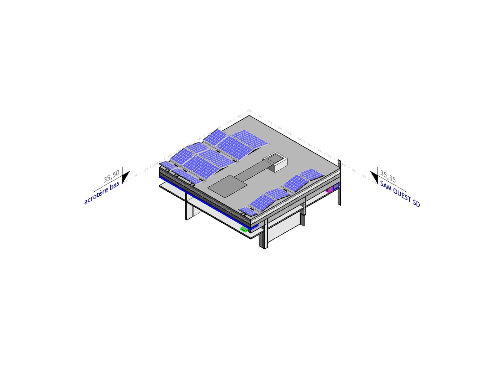
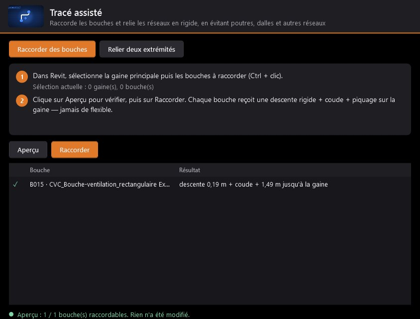

Tracé assisté
Raccorde tes bouches en un clic.
Sélectionne la gaine principale et les bouches : chaque bouche reçoit sa descente rigide, son coude et son piquage. Pour relier deux bouts de réseau, Allan BIM compare toutes les routes orthogonales et garde la plus courte qui évite poutres, dalles, murs et autres réseaux.
- Aperçu avant de modifier la maquette
- Suit ta sélection Revit en direct
- Gaine rigide et coudes, jamais de flexible

